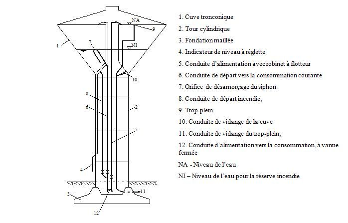

1) Les composantes :
2) Les techniques de construction :
3) Exemple de construction d’un château d’eau :
Le château d’eau a un rôle de réserve et d’organe régulateur de la pression dans le réseau. Seul le défaut de relief dans la zone où doit être implanté le réservoir impose de construire ce dernier sur tour. Structurellement, le château d’eau est donc une cuve surélevée, placée sur un support. Il faut y ajouter la fondation sous ce dernier, importante en raison de la masse de l’ouvrage.
La protection des tuyauteries impose de les loger dans une enceinte fermée, du sol à la cuve ; ce fût participe souvent au soutien du réservoir. Il comporte des planchers régulièrement espacés. L’obligation de couverture minimale de 1 m de terre des canalisations extérieures implique, pour leur pénétration dans l’ouvrage, l’existence d’une cave, pour que la fondation atteigne le sol résistant. Un escalier en colimaçon ou parfois des échelles, permet l’accès à tous les niveaux, de la cave en haut de la cuve.
Classiquement, le château d’eau en béton est construit à l’aide d’un échafaudage. En raison de
la hauteur de l’ouvrage, de l’étendue de la cuve, l’échafaudage provisoire doit être robuste,
volumineux, mais il représente un coût important.
Les efforts des entreprises spécialisées ont donc porté sur la suppression de tout ou partie de
l’échafaudage et la rationalisation du coffrage.
Technique n°1 :
• Le coffrage grimpant permet la réalisation, par tranches verticales successives, du fût du
château d’eau. Il comporte les passerelles de travail nécessaires et prend appui sur la structure
même.
• Il en est de même du coffrage glissant, à cette différence que ce dernier monte de façon
continue, jour et nuit, de la base au sommet du fût. Quelques jours suffisent pour atteindre une
hauteur de plusieurs dizaines de mètres.
• Ces méthodes s’appliquent le plus facilement à des éléments prismatiques ou de section peu
variable.
Technique n°2 :
Pour éviter l’utilisation d’un échafaudage, les entreprises construisent au sol le coffrage
d’ensemble de la cuve, autour du fût . Le fût est réalisé préalablement en coffrage glissant. La
cuve est hissée le long du fût par des câbles et des vérins placés au sommet de celui-ci. La
cuve mise en place est fixée au fût par des éléments précontraints.
Le château d’eau est constitué de différents éléments :
* le radier circulaire
* le fût circulaire
* quatre poteaux symétriquement disposés en partie dans l’épaisseur du fût
* une dalle intermédiaire en partie haute du fût
* le réservoir constitué d’une dalle, d’un cône et d’un couvercle.
Caractéristiques :
Hauteur : 50 m Capacité : 4500 m3 d’eau
* Radier : diamètre : 9 m, hauteur : 1,80
* Poteaux rectangulaires : Dimensions : 1 m x 0,6 m
* Fût circulaire : Diamètre : 6 m, hauteur : 40 m
* Réservoir : La dalle circulaire : 6 m, hauteur : 0,2 m Cône : hauteur : 10 m Couvercle :
diamètre : 40 m, épaisseur : 0,1 m
Quantités principales :
* béton : 2000 m3
* Aciers : 2000 tonnes
* Coffrages : 4000 m²
Procédés d’exécution :
Fondations sur barrettes
Fût béton armé réalisé par levées successives.
Cuve en béton précontraint coulée sur échafaudage au sol.
Accrochage de la cuve sur le fût par clouage vertical au moyen de câbles de précontrainte.
La cuve est levée par vérinage sur 40 m de hauteur le long du fût. _ Poids levé : 1600 tonnes.